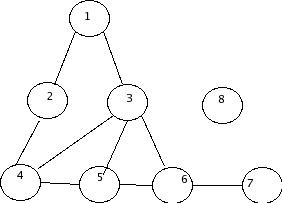
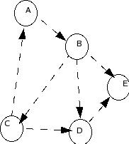
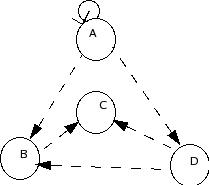
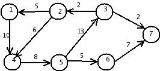

Graphs
INTRODUCTION:
Graphs are mathematically structures and are found very
useful in problem solving.
Graphs provide an excellent way to describe the essential
features of many applications.
Graph is a set of nodes (or vertices ) and edges (or arcs)
which connect them.
G= (V,E)
where V is the set of nodes and E is the set of edges.
A set of edges E are such that E={(vi,vj)} where vi,vj ?V.
That is each edge in a graph is specified by a pair of
nodes.
Example:
A Graph could be viewed as a map of what cities are
connected by train routes. Viewing in this way ,each vertex
represents a particular city and each edge represents
whether there is a train route for one city to another.
If two nodes are connected by an edge those two nodes are
said to be adjacent (or neighbours ). That is ,nodes v1 and
v2 are adjacent if there is an edge (v1,v2) or (v2,v1).

In the above fig Vertices adjacent to node 3 are 1,5,6 and
4 and that to node 2 are 1 and 4.An edge which has
direction is called "directed edge". That means ,
directed edge is "unidirectional".It goes from
one node to another.

In the above fig there is a edge from B to C but there is
no edge representing reverse relationship(from C to B).The
edge which has no specific direction is called #034; undirected edge".
If a node doesn't have any adjacent nodes,then it is said
to be #034;isolated".node 8 in the above fig is
isolated node .A graph which contains only isolated nodes
is called a "null graph"
A directed graph(or digraph) is a graph in which all
edges are directed edges.
An undirected graph is a graph in which all edges are
"undirected edges".A graph which contain both
directed and undirected edges is said to be mixed graph.
An edge in a graph which starts and ends on the same node
is called a "loop".A loop can be considered
either a directed or undirected since there is no
significance.
A pair of nodes may be connected by more than one edge .
Such edges are referred to a parallel. A #034;
MultiGraph" is a graph in which there are some
parallel edges .A simple graph is a graph in which there
are no parllel edges.
The "Degree" of a node is the number of edges
connected directly to that node , i.e., the number of
edges incident on it.

In a directed graph,the "in degree" of a node is
the number of edges beginning from the node .The "out
degree" of a node is the number of edges terminating
at that node.
In the above fig the in degree of a node B is 2 and out
degree of a node B is 1.The sum of in degree and out
degree of a node is the total degree of that node . In
case of undirected graphs ,total degree is nothing but
degree itself . The concept of in degree and out degree
can not apply to undirected graph . A node whose in degree
os 0 is called a "source node" and a node whose
out degree is 0 is called "sink node".for i
solate nodes,the degree is 0.
A "weighted graph" is a graph that has a number
( weight) associated with each edge.
Examples of
Weighted graphs are:-
1)Airline flight information in which the nodes are
airports(cites) and the edges are flights .The weights
could be ticket prices,or distances.
2)A computer network
in which the nodes are computers and the edges are
communication lines .The weights could be line bandwidth.
3)A natural gas distribution system in which nodes are
storage tanks and edges are pipes. Weights could be pipe
capacity or distance.
A path P of length k,in a graph is a sequence of connected
vertices v1,v2,v3,........vk such that (vi,vi+1) ? E for
1<=i<k.
The number of edges in a path is the length of that path.
A simple path in a graph is a path such that all nodes are
distinct,except that the first and last could be same .A
"cycle" in a graph is a path of length atleast 3
which has the first and last nodes are same. i.e., the
path begins and ends on the same node .A directed graph is
a cyclic if it has no cycles.
A graph is said to be connected , if a path exists from
any node to any other node . A digraph with this property
is said to be strongly connected, i.e., a directed path
exists from any node to any other node . If a digraph is
not strongly connected then it is said to be weakly
connected .A graph is said to be complete graph if there is
an edge between every pair of nodes. A tree is nothing but
a complete graph without any cycles.

Back
Back To Main
|